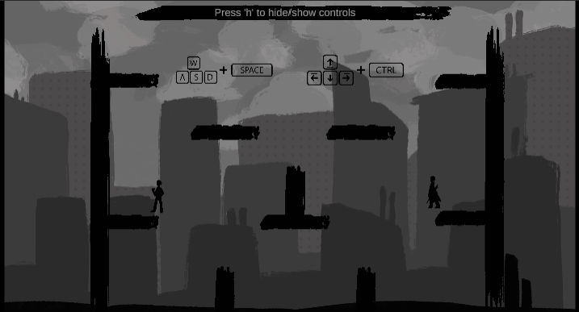

Dresden Duels


Video Playthrough
Game Overview
Dresden Duels Github RepositoryDresden Duels is a 2-player fighting game. Nicodemus Archleone is attacking the city of Chicago, and Harry Dresden must fight him to defend the city. The characters use attacks/techniques from the book: Dresden uses various Wizard spells, and Archleone uses techniques based on his denarii and sword attacks.
This 5-week group project was required to fit in the fictional world of The Dresden Files. As a team we conducted research on the world of Nicodemus and Harry Dresden and decided that a 2-player fighting game would be unique and equally fun to produce.
My Roles
- Implement Character Attacks
- User Interface
- Game States & Menu Systems
Post Mortem
- Fighting games require much more precise mechanics than we were used to.
- Smooth animation for character movement.
- Introduce more characters and movesets to balance the game.
- Develop another map to offer strengths/weakenesses of characters.